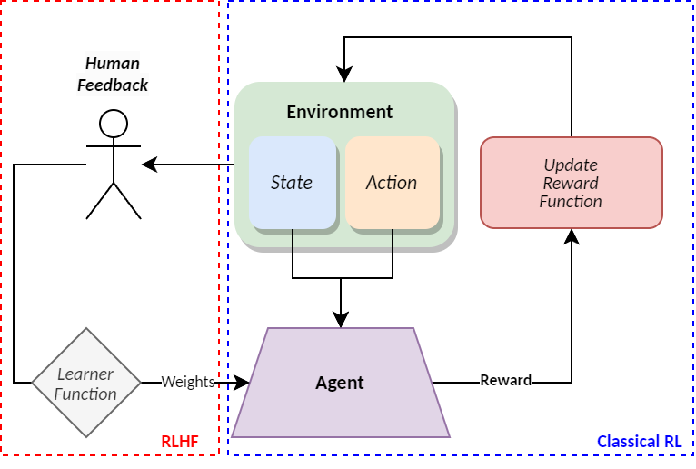
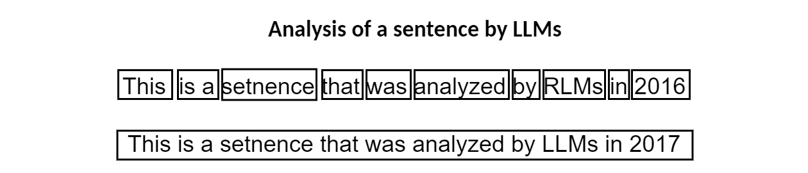
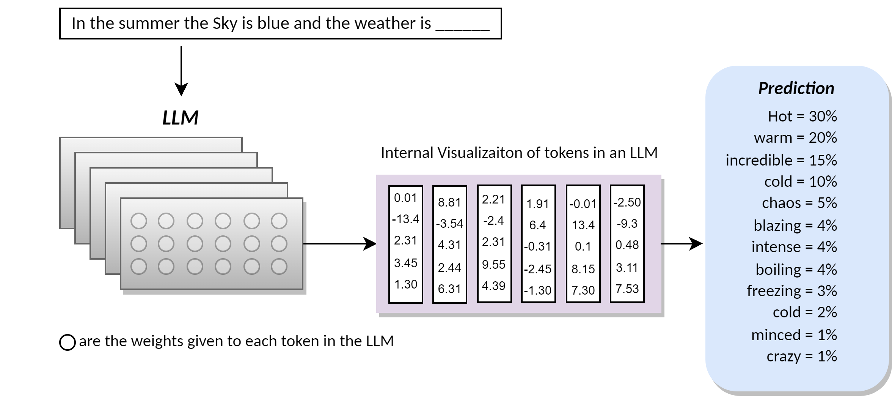
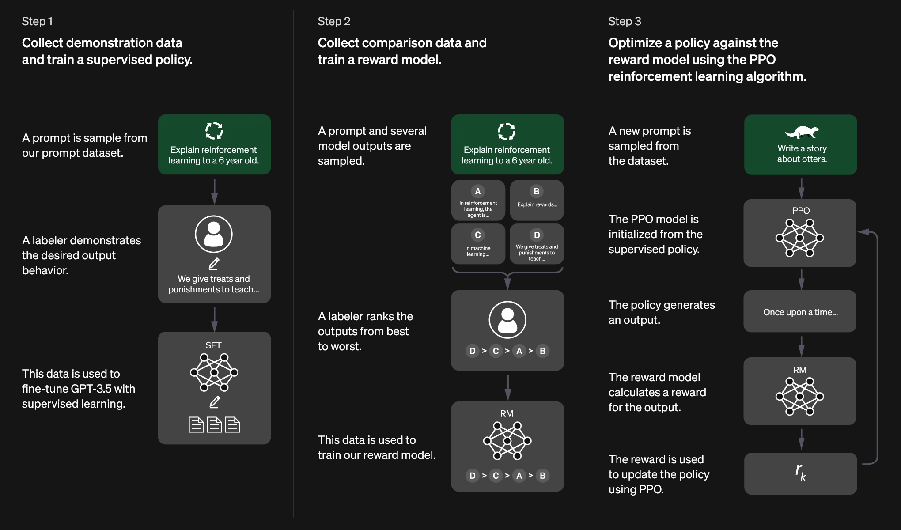
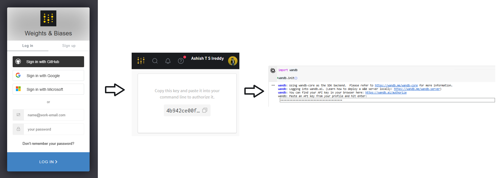

Reinforcement Learning with Human Feedback#
Problem Definition#
With the foundation of classical reinforcement learning (RL) covered, this chapter takes a step towards training intelligent agents that are capble of adapting their behaviour as per the human user. Classical RL aims to train an agent to learn a function defining specific behaviour based on a certain policy while iteratively maximizing the rewards achievable given the agent’s performance. However, this situation requires an explicit definition of the reward function while also creating complexity for dynamic adaptation. In many real-world scenarios, the ground truth may be subjective (i.e. not absolutely defined) E.g. the perception of an aggressive question may be different for each human user. Situation as such calls for the need to align models that can adapt to the human user’s personal perception over offerring generic solutions.
Reinforcement Learning with Human Feedback (RLHF) is one way to address this problem by training the reward function directly from acquired human feedback, to align the model with human expectations given the situation, context and the human’s perception. In RLHF, we start with a pre-trained model that is tested for specific results. This model then serves as the baseline to re-train using feedback and improve an agent’s policy via an optimization algorithm (e.g. proximal policy optimization). Some of the most famous and widely used applications of RLHF are generative AI, large language models (LLMs), e.g. Chatgpt etc. The base of these generative AI applications is feedback training on supervised pre-trained models that are then optimized to meet the human user’s goals. The figure below provides an overview of RLHF vs Classical RL where the introduction of human feedback into the training loop allows the agent to add wieghts (relevance and priorty) as per user’s personalization.
{kind=link}
In this notebook we present a practical implementation of RLHF aimed at aligning a generative model (GPT-2) to produce more positive movie reviews. It uses the IMDB dataset for movie reviews and a comparision between standard GPT-2 versus RLHF-trained GPT-2 to see the impact of feedback. Within this example, we will use the BERT reward model for sentiment analysis and a Proximal Policy Optimization (PPO) condition approach for RL training.
Before diving into RLHF, we first need to introduce certain concents about LLMs and have a brief overview of the RLHF training procedure.
What is a Large Language Model (LLM)?#
In simplest terms, a language model is a type of machine learning model trained to generate a probability distribution of words relative to the environment. An LLM is a larger and juiced up version with millions of tuning parameters and variables used to work with languages. To progress further, we need to recap a basic understanding of how natural language processing (NLP) works for prediction tasks. Prior to 2016, language models interpretted words and sentences by processing word after word. While in 2017, the engineers at google presented the concept of transformers [VSP+17]. The Token is the numeric representation of a word, set of characters or sentences when processed as a block. The following Figure showcases the approach of LLMs when analyzed using transformers.

What are Transformers?#
-Transformers are a state-of-the-art architecture that computes text as tokens and converts by converting it into a vector along a embeddings table that stores the relative context of text with respect to the environment. It was introduced by google engineers in the paper [VSP+17], where attention denotes the relative importance (i.e. weightage) of each component (text) in a sequence relative to the other components in that specific sequence. Transformers are widely used as part of languge model applications for translation, prediciton etc. One of the most notable changes in LLMs with the introduction of transformers, were its ability to read complete texts in parallel. Words assocoated with numbers as vector are more efficient to tune across multi dimension matrices describing the attention (i.e. relevance or weightage) of the words within the given texts. The Figure below provides an overview of a simple case where, given a sentence to complete, the LLM sweeps through its vast training to extract probablities of the upcoming words relative to the given sentence.

Implementation#
In this chapter, we focus on a task that aims to include human feedback into the training process of an LLM and then observe the difference before and after human feedback. We will be using a movie review data set called IMDB, a pre-trained generative model (gpt2) on the IMDB, a BERT (Bidirectional Encoder Representations from Transformers) to finetune the model on IMDB data for sentinment analysis and RL via Proximal policy optimization. In the general ChatGPT (Generative pre-trained transformer) model training, the steps followed were as such:
Supervised fine-tuning - (SFT). Supervised fine-tuning of a previously trained language model (LM) on the first type of labeled data - with ready-made answers.
Reward model. Training a reward model on the second type of data - people ranking different bot responses.
Reinforcement learning - RL. Using a reward model to retrain a language model (LM) using reinforcement learning (RL) .
These steps are repeated for multiple iterations to finally build a reward function that models human preferences [OWJ+22].
 Figure source: https://openai.com/index/chatgpt/
In order to train models, we use Proximal policy optimization (PPO) approach. A reinforcement learning (RL) algorithm for training an intelligent agent via a policy gradient method. We use this approach to ensure that the over-training & over fitting do not occur. The outcomes of such a step is to prevent bias in the results.
Intialization#
We first install and load libraries that we wil be using throughout this chapter
!pip install git+https://github.com/huggingface/transformers
!pip install datasets==2.15.0
!pip install peft==0.5.0
!pip install trl==0.11.3
!pip install --no-binary numpy==1.26.4
import torch
import pandas as pd
from tqdm import tqdm
tqdm.pandas()
from datasets import load_dataset
from transformers import AutoTokenizer, GPT2LMHeadModel, pipeline
from trl.core import LengthSampler
from trl import PPOTrainer, PPOConfig, AutoModelForCausalLMWithValueHead
from peft import get_peft_model, LoraConfig, TaskType
Intializing the Pre-trained model on IMDB data#
Here we setup our PPO RL training conditions with a learning rate (LR) and a base for logging weights of the transformer during training. Here, we use “wandb” for its simplcity in usage.
Source: https://huggingface.co/lvwerra/gpt2-imdb
config = PPOConfig(
model_name="lvwerra/gpt2-imdb",
learning_rate=1.5e-5,
log_with="wandb")
# Argument to be sent to Sentiment model
sent_kwargs = {"return_all_scores": True, "function_to_apply": "none", "batch_size": 16}
/usr/local/lib/python3.11/dist-packages/trl/trainer/ppo_config.py:207: FutureWarning: `PPOConfig` is deprecated and will be removed in the future. Please use `PPOv2Config` with `PPOv2Trainer` instead.
warnings.warn(
Creating a wandb instance to log Weights#
Here, you will be asked to open the website and create an account/log in to acquire your api. The steps are as follow:
Go to: wandb and create an account/log in using existing accounts.
Next, go to Authorize Wandb to create API, here you will see a dashboard with your API key
Copy and paste this API into the instance below as show in the image

import wandb
wandb.init()
wandb: Using wandb-core as the SDK backend. Please refer to https://wandb.me/wandb-core for more information.
wandb: Currently logged in as: ash-dadaya (ash-dadaya-hse-university) to https://api.wandb.ai. Use `wandb login --relogin` to force relogin
/content/wandb/run-20250427_174334-957nno8aLoading Data#
This IMDB dataset contains 50,000 reviews of movies labelled with positive or negative feedback. We load this data, filter to include reviews that are greater than 250 words and tokenize the text.
def tokenize_data(config, dataset_name="imdb", input_min_text_length=2, input_max_text_length=8):
"""
Args:
dataset_name (`str`):
The name of the dataset to be loaded.
Returns:
dataloader (`torch.utils.data.DataLoader`):
The dataloader for the dataset.
"""
tokenizer = AutoTokenizer.from_pretrained(config.model_name)
tokenizer.pad_token = tokenizer.eos_token
# Load imdb dataset
dfs = load_dataset(dataset_name, split="train")
dfs = dfs.rename_columns({"text": "review"})
dfs = dfs.filter(lambda x: len(x["review"]) > 250, batched=False)
input_size_txt = LengthSampler(input_min_text_length, input_max_text_length)
def tokenize(sample):
sample["input_ids"] = tokenizer.encode(sample["review"])[: input_size_txt()]
sample["query"] = tokenizer.decode(sample["input_ids"])
return sample
dfs = dfs.map(tokenize, batched=False)
dfs.set_format(type="torch")
return dfs
dataset = tokenize_data(config)
/usr/local/lib/python3.11/dist-packages/huggingface_hub/utils/_auth.py:94: UserWarning:
The secret `HF_TOKEN` does not exist in your Colab secrets.
To authenticate with the Hugging Face Hub, create a token in your settings tab (https://huggingface.co/settings/tokens), set it as secret in your Google Colab and restart your session.
You will be able to reuse this secret in all of your notebooks.
Please note that authentication is recommended but still optional to access public models or datasets.
warnings.warn(
def collator(data):
return dict((key, [d[key] for d in data]) for key in data[0])
Load gpt2 model#
We load the gpt2 model as two instances as a:
Trained version (Optimized)
Reference version (Original)
to observe the difference in performance with feedback as a factor
model = GPT2LMHeadModel.from_pretrained(config.model_name)
peft_config = LoraConfig(
task_type=TaskType.CAUSAL_LM,
inference_mode=False,
r=32,
lora_alpha=32,
lora_dropout=0.1)
peft_model = get_peft_model(model, peft_config)
new_model = AutoModelForCausalLMWithValueHead.from_pretrained(peft_model, is_trainable=True)
original_model = AutoModelForCausalLMWithValueHead.from_pretrained(config.model_name)
tokenizer = AutoTokenizer.from_pretrained(config.model_name)
tokenizer.pad_token = tokenizer.eos_token
/usr/local/lib/python3.11/dist-packages/peft/tuners/lora.py:475: UserWarning: fan_in_fan_out is set to False but the target module is `Conv1D`. Setting fan_in_fan_out to True.
warnings.warn(
Creating instances of BERT Classfied to fine tune the IMDB dataset#
ppo_trainer = PPOTrainer(
config, new_model, original_model, tokenizer, dataset=dataset, data_collator=collator)
src_device = ppo_trainer.accelerator.device
if ppo_trainer.accelerator.num_processes == 1:
src_device = 0 if torch.cuda.is_available() else "cpu" # to avoid a `pipeline` bug
sentiment_pipe = pipeline(
"sentiment-analysis", model="lvwerra/distilbert-imdb", device=src_device)
/usr/local/lib/python3.11/dist-packages/trl/trainer/ppo_trainer.py:193: FutureWarning: `PPOTrainer` is deprecated and will be removed in trl v0.12. Please use `PPOv2Trainer` instead.
warnings.warn(
View project at: https://wandb.ai/ash-dadaya-hse-university/uncategorized
Synced 5 W&B file(s), 0 media file(s), 0 artifact file(s) and 0 other file(s)
./wandb/run-20250427_174334-957nno8a/logs/content/wandb/run-20250427_174354-cslh4uuqDevice set to use cpu
Mini Visualizaiton#
Here, we show the sentimental output for either types of reviews as probablities. i.e. Positive and negative logits to represent the output.
test_1 = "this movie was really bad!!"
sentiment_pipe(test_1, **sent_kwargs)
/usr/local/lib/python3.11/dist-packages/transformers/pipelines/text_classification.py:106: UserWarning: `return_all_scores` is now deprecated, if want a similar functionality use `top_k=None` instead of `return_all_scores=True` or `top_k=1` instead of `return_all_scores=False`.
warnings.warn(
[[{'label': 'NEGATIVE', 'score': 2.335048198699951},
{'label': 'POSITIVE', 'score': -2.7265758514404297}]]
test_2 = "It was an amazing movie"
sentiment_pipe(test_2, **sent_kwargs)
[[{'label': 'NEGATIVE', 'score': -2.496453285217285},
{'label': 'POSITIVE', 'score': 2.7821977138519287}]]
test_3 = "I threw up at by finale of the movie"
sentiment_pipe(test_3, **sent_kwargs)
[[{'label': 'NEGATIVE', 'score': 1.2481341361999512},
{'label': 'POSITIVE', 'score': -1.6977636814117432}]]
Experiment#
Here, we aim to train the model in the following steps similar to how an MDP is traverssed:
The Query is considered as the state of the system (S), the response is the action (A) taken when in state (S) and reward (R) is achieved with this tuple
Acquire responses from gpt-2 model
Acquire sentiment from BERT
Optimze the policy via PPO using (query, response, reward)
When run on Google Colab, this snippet of code takes around 35 - 40 mins to complete 12 steps of training.
output_min_length = 4 # The minimum number of tokens for each model response
output_max_length = 16 # The maximum number of tokens for each model response
output_length_sampler = LengthSampler(output_min_length, output_max_length) # Sampling between the min-max length
gen_kwargs = {
"min_length": -1,
"top_k": 0.0,
"top_p": 1.0,
"do_sample": True,
"pad_token_id": tokenizer.eos_token_id,
}
num_steps = 12 # Number of training steps w.r.t PPO
for epoch, batch in tqdm(enumerate(ppo_trainer.dataloader)):
if epoch >= num_steps:
break
query_tensors = batch["input_ids"]
# Acquire response from gpt2
response_tensors = []
for query in query_tensors:
gen_len = output_length_sampler()
generation_kwargs["max_new_tokens"] = gen_len
response = ppo_trainer.generate(query, **generation_kwargs)
response_tensors.append(response.squeeze()[-gen_len:])
batch["response"] = [tokenizer.decode(r.squeeze()) for r in response_tensors]
# Sentiment computation score
texts = [q + r for q, r in zip(batch["query"], batch["response"])]
pipe_outputs = sentiment_pipe(texts, **sent_kwargs)
rewards = [torch.tensor(output[1]["score"]) for output in pipe_outputs]
# PPO looping steps
stats = ppo_trainer.step(query_tensors, response_tensors, rewards)
print(f'objective/kl: {stats["objective/kl"]}')
print(f'ppo/returns/mean: {stats["ppo/returns/mean"]}')
print(f'ppo/policy/advantages_mean: {stats["ppo/policy/advantages_mean"]}')
print("-".join("" for x in range(100)))
ppo_trainer.log_stats(stats, batch, rewards)
0it [00:00, ?it/s]
objective/kl: 0.0
ppo/returns/mean: [0.7363893]
ppo/policy/advantages_mean: [8.384737e-08]
---------------------------------------------------------------------------------------------------
2it [09:18, 276.84s/it]
objective/kl: -0.00028980534989386797
ppo/returns/mean: [0.50014883]
ppo/policy/advantages_mean: [5.362319e-08]
---------------------------------------------------------------------------------------------------
3it [13:46, 273.10s/it]
objective/kl: -0.0018314942717552185
ppo/returns/mean: [0.2460297]
ppo/policy/advantages_mean: [2.1364782e-08]
---------------------------------------------------------------------------------------------------
4it [18:25, 275.16s/it]
objective/kl: -0.001931782579049468
ppo/returns/mean: [0.51561016]
ppo/policy/advantages_mean: [4.4654787e-08]
---------------------------------------------------------------------------------------------------
5it [23:02, 276.12s/it]
objective/kl: -0.0013388340594246984
ppo/returns/mean: [0.7350349]
ppo/policy/advantages_mean: [-6.260703e-08]
---------------------------------------------------------------------------------------------------
6it [27:41, 276.84s/it]
objective/kl: 0.0016613180050626397
ppo/returns/mean: [0.55383056]
ppo/policy/advantages_mean: [-1.1246533e-07]
---------------------------------------------------------------------------------------------------
7it [32:12, 275.18s/it]
objective/kl: -0.005873559974133968
ppo/returns/mean: [0.48312318]
ppo/policy/advantages_mean: [2.483527e-09]
---------------------------------------------------------------------------------------------------
8it [36:43, 273.78s/it]
objective/kl: -0.004583868198096752
ppo/returns/mean: [0.35332435]
ppo/policy/advantages_mean: [4.4592003e-08]
---------------------------------------------------------------------------------------------------
9it [41:11, 272.00s/it]
objective/kl: -0.006592849735170603
ppo/returns/mean: [0.44370276]
ppo/policy/advantages_mean: [-7.629787e-08]
---------------------------------------------------------------------------------------------------
10it [45:44, 274.42s/it]
objective/kl: -0.005800541490316391
ppo/returns/mean: [0.56546915]
ppo/policy/advantages_mean: [2.091391e-08]
---------------------------------------------------------------------------------------------------
#To interpret results, we create a script to generate and evaluate sentimate of respones across old and new models
batch_size = 18 # Number of queries o take as input
game_data = dict()
dataset.set_format("pandas")
# Random sampling of data
df_batch = dataset[:].sample(batch_size)
# We store queries as string lists
game_data["query"] = df_batch["query"].tolist()
query_tensors = df_batch["input_ids"].tolist()
# To store final resulting outputs
response_tensors_ref, response_tensors = [], []
# Acquiring respones from Original model and Newly trained model
for i in range(batch_size):
gen_len = output_length_sampler()
output = original_model.generate(
torch.tensor(query_tensors[i]).unsqueeze(dim=0).to(src_device),
max_new_tokens=gen_len,
**gen_kwargs
).squeeze()[-gen_len:]
response_tensors_ref.append(output)
output = new_model.generate(
input_ids=torch.tensor(query_tensors[i]).unsqueeze(dim=0).to(src_device),
max_new_tokens=gen_len,
**gen_kwargs
).squeeze()[-gen_len:]
response_tensors.append(output)
# Recover the text from given tokenized vector
game_data["response (before)"] = [
tokenizer.decode(response_tensors_ref[i]) for i in range(batch_size)
]
game_data["response (after)"] = [
tokenizer.decode(response_tensors[i]) for i in range(batch_size)
]
# Sentiment analysis of query-response pairs before feedback training
texts = [q + r for q, r in zip(game_data["query"], game_data["response (before)"])]
game_data["rewards (before)"] = [
output[1]["score"] for output in sentiment_pipe(texts, **sent_kwargs)
]
# Sentiment analysis of query-response pairs after feedback training via PPO RL
texts = [q + r for q, r in zip(game_data["query"], game_data["response (after)"])]
game_data["rewards (after)"] = [
output[1]["score"] for output in sentiment_pipe(texts, **sent_kwargs)
]
# Visualization of the results
df_results = pd.DataFrame(game_data)
df_results
/usr/local/lib/python3.11/dist-packages/transformers/pipelines/text_classification.py:106: UserWarning: `return_all_scores` is now deprecated, if want a similar functionality use `top_k=None` instead of `return_all_scores=True` or `top_k=1` instead of `return_all_scores=False`.
warnings.warn(
| query | response (before) | response (after) | rewards (before) | rewards (after) | |
|---|---|---|---|---|---|
| 0 | Yes I admit I cried during this | one, I'm while the truck flipped.)< | last viewing.<br /><br />I truly | -0.608511 | 1.951699 |
| 1 | I generally find Loretta Young | a signifier. Her writing is always very poor,... | 's stuff pretty restrained and dark, for insta... | -2.404545 | 1.521147 |
| 2 | This was a disappointing | film. I've gotta | film. It didn't | -2.847512 | -2.773234 |
| 3 | This is | much more than to say it's a thriller, it is a | one of Lois Torrence's best films, at least. ... | 2.057177 | 2.635111 |
| 4 | An old man | hit by what might | managed to make an | -0.880338 | -0.953584 |
| 5 | This film can | 't lie in any way, it's all | effortlessly tell the difference. The acting ... | 0.597921 | 2.745242 |
| 6 | I saw this movie about 5 | or 6 yrs | times after I picked | 0.048315 | 1.311543 |
| 7 | Spike Lee has been | around a long enough | as bad as it | 0.642214 | -2.094339 |
| 8 | I saw this film | , just dumb....not from the censors, but anyway! | at a film festival; the actors/actresses befo... | -1.926696 | 1.342419 |
| 9 | I have to agree | that these characters are just wasted. Eviden... | that the book in the 80's is so tasteless | -2.914865 | -1.551304 |
| 10 | Thoughtless, ignorant, ill | -informed, godless | -conceived, week | -2.656834 | -2.884943 |
| 11 | Dark Rising is | also a spoiler and badly directed graphic nov... | by my standard (Max Dillon's latest film), bu... | -2.908494 | -1.567007 |
| 12 | Mobile Suit Gundam Wing is the | best Gundam yet for the mastering of this mas... | most up to date animation of all time. As is ... | 2.509727 | 2.041152 |
| 13 | Why is it that everyone who | lives in the mostly swanky club | believes fake news today seems to be | -0.154455 | -0.837222 |
| 14 | I wish more movies were | made of this kind, so we can all watch this m... | like that than Roskin'. He's lucky to direct ... | 1.649065 | 1.155018 |
| 15 | Great CGI effects & | special effects and nothing just | Covering.3 Disney | -0.286802 | 1.571842 |
When going through the results dataframe in detail. We can see multiple instances where the completed query before human feedback is more blatant and non positively encouraging. However, in the feedback-trained model, we can see the respones becoming more positive and encouraging.
e.g.
Query: I have to agree _____
Response (before feedback): “that these characters are just wasted.”
Response (after feedback) : “that the book in the 80’s is so tasteles”
Query: This is …
Response (before feedback): “much more than to say it’s a thriller, it is a”
Response (after feedback) : “one of Lois Torrence’s best films, at least.”
Conclusions#
Overall, within this chapter we study the foundations of LLMs, transformers and the concept of having human feedback included into the training process via reiforcement learning. Using an experiment to re-train an RL model to propose more positive reviews of movies from the IMDB. We see the result showing difference between the base gpt2 model versus the human feedback trained model. However, it is worth noting that despite the expanding applications of RLHF from text summarizations to computer vision etc, they still face challenges due to their training and data colleciton approaches which together impacts the performance of the models, by creating bias, hallucinations etc. There are still debates and dilemmas about whether a model is as good as its data or whether retraining is the key to better performance but this extends into a research question on its own.
You can also check out the gpt-2 model trained on IMDB dataset aiming to give neutral reviews (https://huggingface.co/mrm8488/gpt2-imdb-neutral).